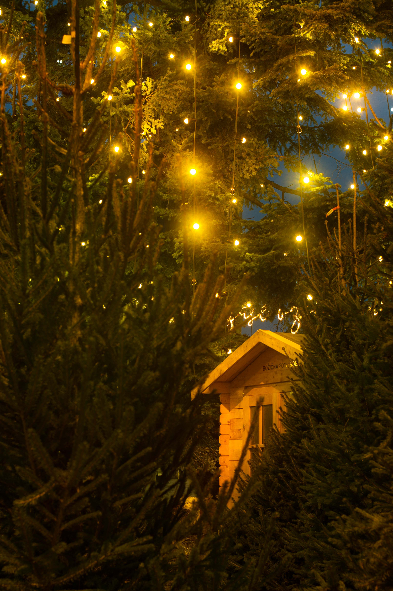

Voščilo
Spoštovane članice in spoštovani člani Društva generala Rudolfa Maistra Kranj,
želim vam prijetne prihajajoče praznike ter veliko zdravja, zadovoljstva, uspehov in sreče v zasebnem življenju in delu v letu 2021. Želim, da bo tudi naše javno in domoljubno delovanje v društvu koristen prispevek k normalizaciji razmer in hitrejšemu razvoju Slovenije.
Janez Tavčar
Predsednik Društva GRM Kranj
 Foto: Martijn van Mierlo